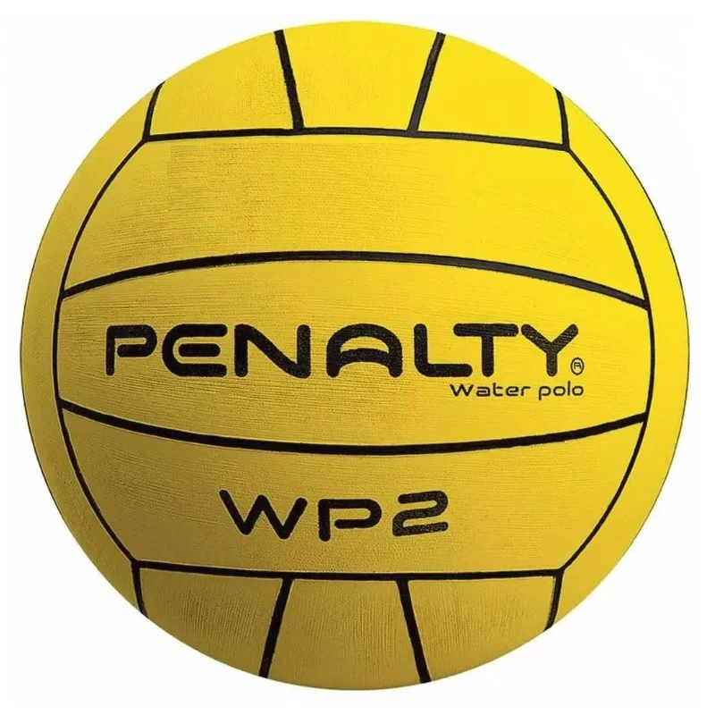
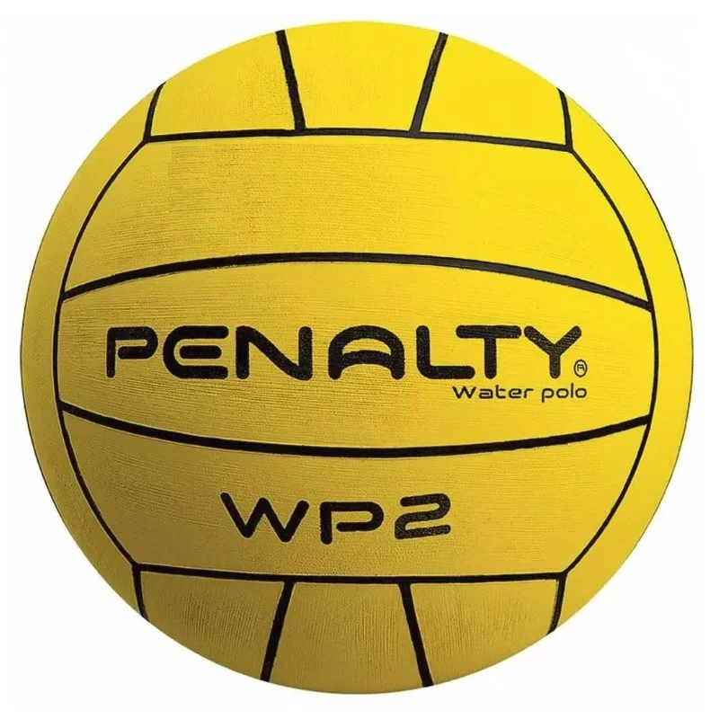
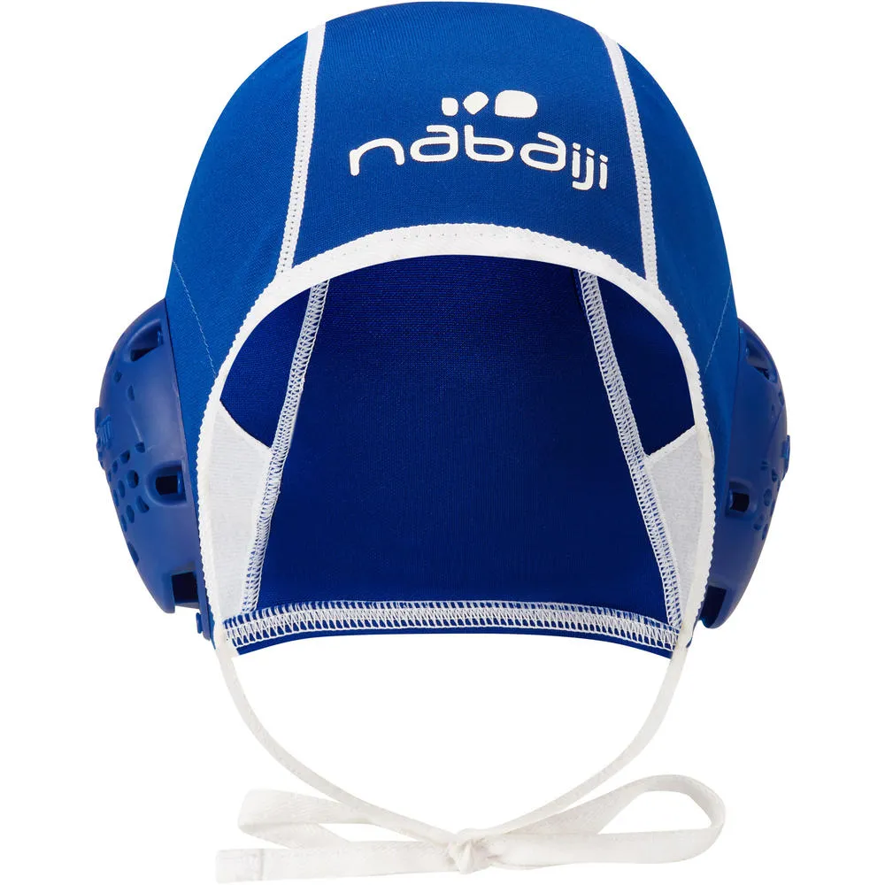
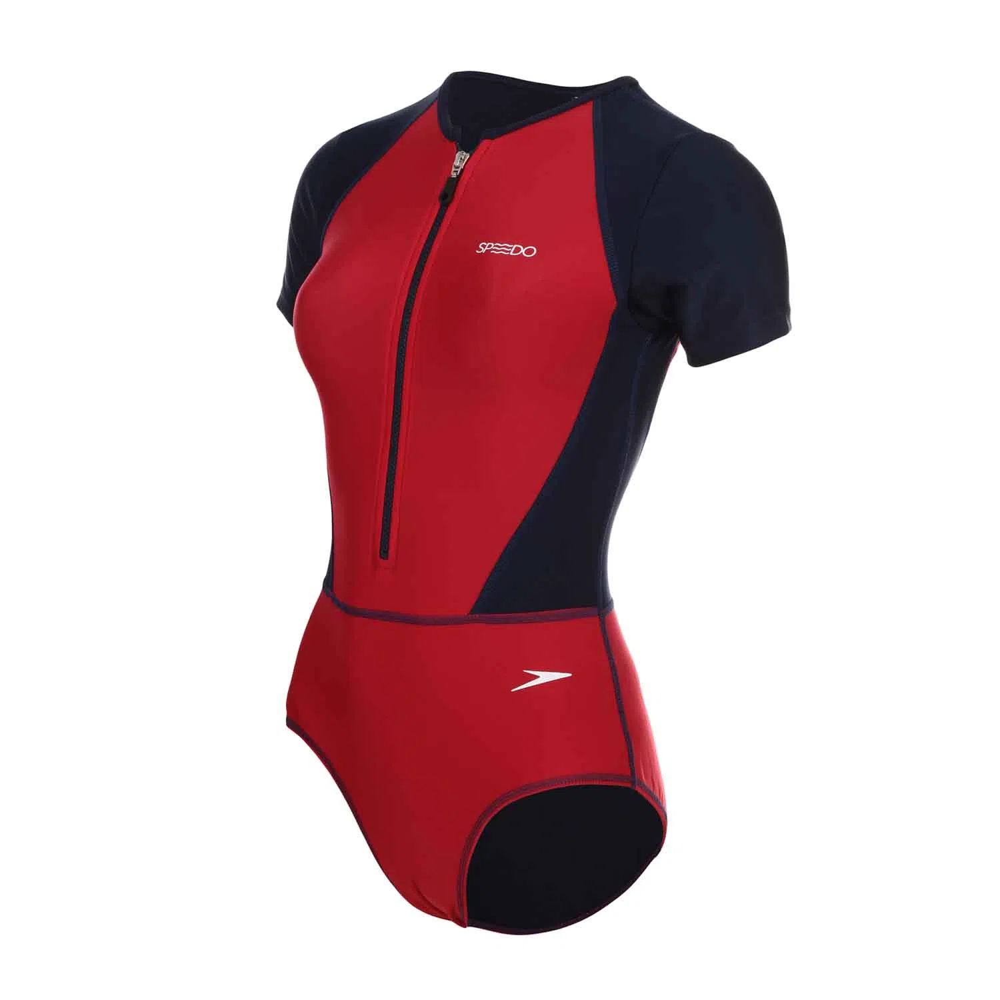

Bola Polo Aquatico

R$ 999,00
Bola aquática - water polo - polo aquatico
R$ 2,514,00
Bola Polo Aquático Oficial - WP3 - Penalty
origem do polo aquático remonta à Europa do século 18. Inicialmente, era uma forma de entretenimento praticado principalmente em rios e lagos. O primeiro jogo oficial foi realizado em Londres, no Crystal Palace Plunge. Em 1900, o polo aquático foi introduzido nos Jogos Olímpicos de Paris, tornando-se a primeira modalidade coletiva da história do evento. aqui
R$ 999,00
Bola aquática - water polo - polo aquatico
Bola Polo Aquático Oficial - WP3 - Penalty

R$ 954,00
Touca Gorro Polo Aquatico SPEEDO BLACK
Touca de polo aquático adulto

R$ 971,00
TYR Terno Pólo Aquático Breakaway Solid
Maiô Manga Curta Life Saver 2 - CHIC RED AZUL MARINHO